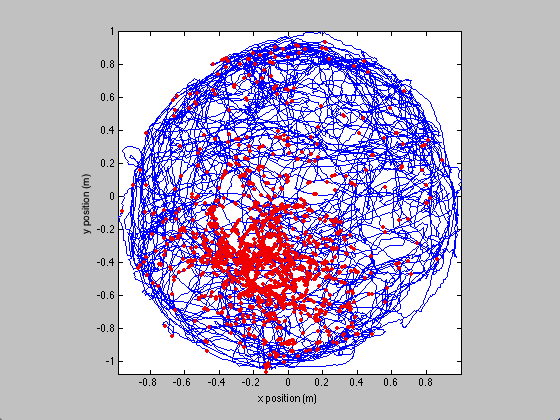
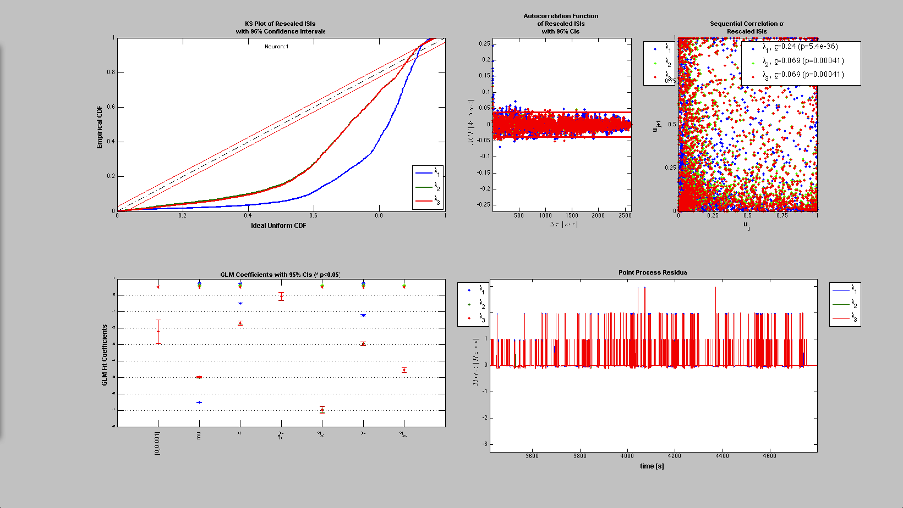
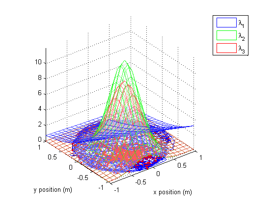
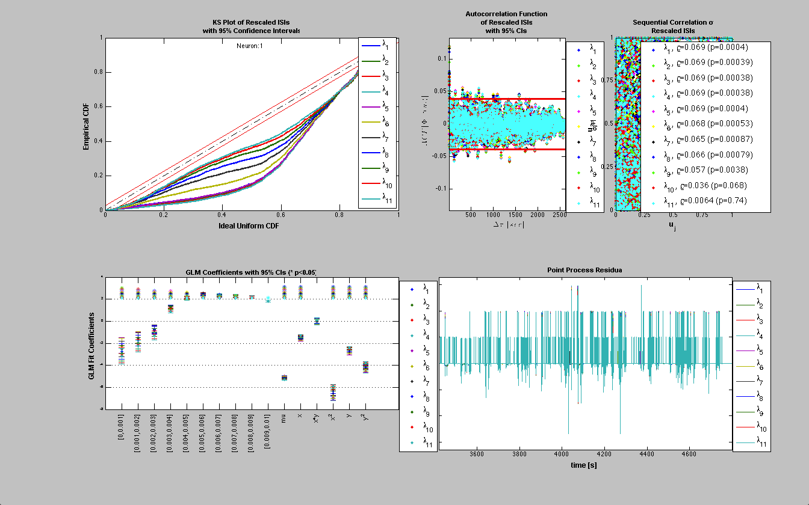

Contents
Analysis Examples 2
Compare with traditional Neural Spike Train Analysis here
% load the rat trajectory and spiking data; close all; warning off; load('glm_data.mat'); nst = nspikeTrain(spiketimes); baseline = Covariate(T,ones(length(xN),1),'Baseline','time','s','',{'mu'}); position = Covariate(T,[xN yN],'Position', 'time','s','m',{'x','y'}); velocity = Covariate(T,[vxN,vyN],'Velocity','time','s','m/s',{'v_x','v_y'}); radial = Covariate(T,[xN yN xN.^2 yN.^2 xN.*yN],'Radial','time','s','m',{'x','y','x^2','y^2','x*y'}); % could just define velocity = postion.derivative; %possibly add view as vector for covariates of dimension 3 or less
In the original analysis, we already had vectors of the covariates sampled at the spiketimes. This step would require interpolating the covariates and then sampling them at each of the spikeTimes. In our case this is quite simple.
[values_at_spiketimes] =position.getValueAt(spiketimes);
We could also upsample our data to get better estimates of the covariates at these points
[values_at_spiketimes] =position.resample(1/min(diff(spiketimes))).getValueAt(spiketimes);
visualize the raw data
figure; plot(position.getSubSignal('x').dataToMatrix,position.getSubSignal('y').dataToMatrix,... values_at_spiketimes(:,1),values_at_spiketimes(:,2),'r.'); axis tight square; xlabel('x position (m)'); ylabel('y position (m)');
Create a trial object and define the fits that we want to run
spikeColl = nstColl({nst});
covarColl = CovColl({baseline,radial});
trial = Trial(spikeColl,covarColl);
clear tc;
sampleRate=30;
% tcObj=TrialConfig(covMask,sampleRate, history,minTime,maxTime)
tc{1} = TrialConfig({{'Baseline','mu'},{'Radial','x','y'}},sampleRate,[]); tc{1}.setName('Linear');
tc{2} = TrialConfig({{'Baseline','mu'},{'Radial','x','y','x^2','y^2','x*y'}},sampleRate,[]); tc{2}.setName('Quadratic');
tc{3} = TrialConfig({{'Baseline','mu'},{'Radial','x','y','x^2','y^2','x*y'}},sampleRate,[0 1]./sampleRate); tc{3}.setName('Quadratic+Hist');
Create our collection of configurations and run the analysis;
tcc = ConfigColl(tc); makePlot=1; neuronNum=1; fitResults =Analysis.RunAnalysisForAllNeurons(trial,tcc,0); fitResults.plotResults;
Analyzing Configuration #1: Neuron #1 Analyzing Configuration #2: Neuron #1 Analyzing Configuration #3: Neuron #1
Visualize the firing rates as a function of the spatial covariates
figure; [x_new,y_new]=meshgrid(-1:.1:1); %define new x and y y_new = flipud(y_new); x_new = fliplr(x_new); %For each covariate new to place the new data in a cell array newData{1} =ones(size(x_new)); newData{2} =x_new; newData{3} =y_new; newData{4} =x_new.^2; newData{5} =y_new.^2; newData{6} =x_new.*y_new; color = Analysis.colors; % Evaluate our fits using the new parameters for i=1:fitResults.numResults lambda = fitResults.evalLambda(i,newData); h_mesh = mesh(x_new,y_new,lambda,'AlphaData',0); get(h_mesh,'AlphaData'); set(h_mesh,'FaceAlpha',0.2,'EdgeAlpha',0.8,'EdgeColor',color{i}); %figure; hold on; end legend(fitResults.lambda.dataLabels); plot(position.getSubSignal('x').dataToMatrix,position.getSubSignal('y').dataToMatrix,... values_at_spiketimes(:,1),values_at_spiketimes(:,2),'r.'); axis tight square; xlabel('x position (m)'); ylabel('y position (m)');
Toolbox vs. Standard GLM comparison
Compare the results using our approach with the standard approach used in the first example previous standard regression
[b,dev,stats] = glmfit([xN yN xN.^2 yN.^2 xN.*yN],spikes_binned,'poisson'); b-fitResults.b{2} % should be close to zero
ans =
-0.0011
0.0050
0.0034
0.0069
0.0077
0.0165
Compute the history effect
sampleRate=30; makePlot=1; neuronNum = 1;
covLabels = {{'Baseline','mu'}};
Algorithm = 'GLM';
batchMode=0;
windowTimes =(0:2:10)./sampleRate;
[fitResults,tcc] = Analysis.computeHistLag(trial,neuronNum,windowTimes,covLabels,Algorithm,batchMode,sampleRate,makePlot);
Analyzing Configuration #1: Neuron #1 Analyzing Configuration #2: Neuron #1 Analyzing Configuration #3: Neuron #1 Analyzing Configuration #4: Neuron #1 Analyzing Configuration #5: Neuron #1 Analyzing Configuration #6: Neuron #1